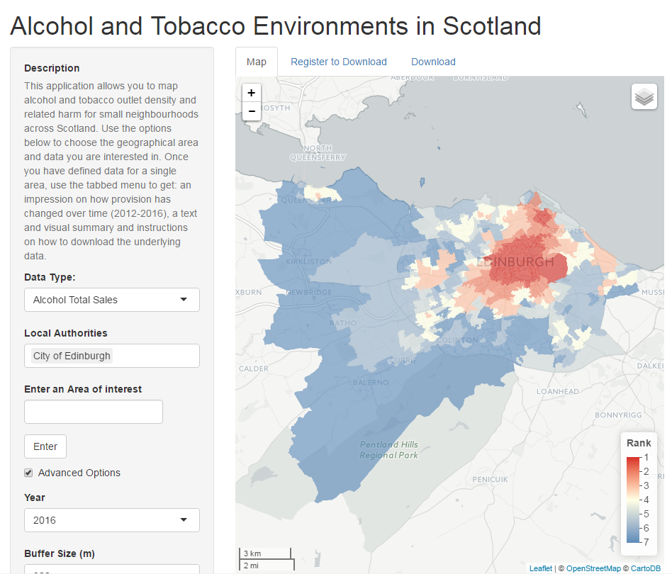

Alcohol and Tobacco Environments in Scotland
Use the map to explore alcohol and tobacco retailer density.

Mood Mobility and Place Geodataportal
Use the dropdown menus to export historical socio-economic and environmental data for Edinburgh, Scotland.